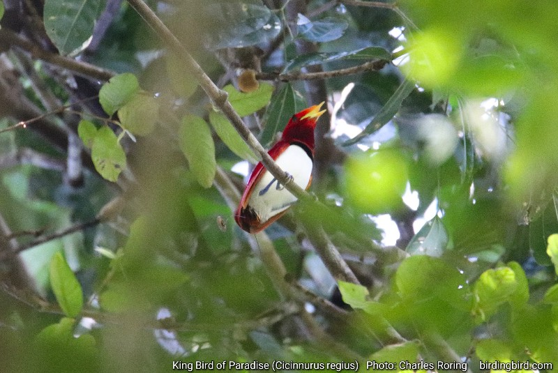

Cendrawasih adalah nama yang sering dipakai untuk sejumlah spesies yang tergabung dalam keluarga burung surga. Ada 42 spesies yang dikenal dalam dunia sains sampai sejauh ini. Yang terkenal di masyarakat dan sering kita lihat di berbagai foto dan lukisan adalah Cendrawasih Kuning Kecil atau Lesser Birds of Paradise (Paradisaea minor). Panjang burung jantan adalah 32 cm.

Cendrawasih Kuning Kecil
Teropong pengamatan burung yang saya rekomendasikan:
Ada banyak kawasan hutan yang menjadi lokasi wisata pengamatan Cendrawasih Kuning Kecil beberapa di antaranya adalah hutan Susnguakti di Manokwari, Lembah Klasouw di Kabupaten Sorong, Hutan Weyos serta Kampung Ayapokiar di Kabupaten Tambrauw.
Sebenarnya masih ada lagi burung Cendrawasih yang lebih kecil ukurannya yakni Cendrawasih Raja - King Bird of Paradise (Cicinnurus regius) yang hidup di hutan hujan tropis dataran rendah dan dataran tinggi Tanah Papua dan pulau sekitarnya seperti Yapen, Salawati, Misool dan Kepulauan Aru. Ini adalah burung surga terkecil di dataran utama Papua. Panjang jantan adalah 16 cm. Burung Surga Raja sebenarnya masih banyak hidup di hutan. Tapi karena ukuran badannya yang relatif kecil maka ia agak sulit dilihat. Hidupnya menyendiri di sebuah pohon yang dililit tanaman rotan atau tanaman tali merambat serta menggelantung di dahan-dahan besar.
Burung Surga Raja
Di Kepulauan Raja Ampat ada juga spesies Cendrawasih Botak atau Wilson's Bird of Paradise (Diphyllodes respublica). Pulau Waigeo, Gam dan Batanta adalah habitat alamiahnya. Kebanyakan lokasi pengamatan burung surga Wilson ini berada agak jauh ke dalam hutan. Sang jantan akan membersihkan tanah lokasi ia berdansa berukuran kurang lebih 4 × 4 meter. Daun dan ranting yang jatuh akan dipungut dengan paruh dan dibuangnya keluar areal dansa. Beberapa batang tanaman berdiameter kecil yang ada di tengah arena bermain akan dibiarkannya tetapi tetap dibersihkan. Batang-batang tanaman inilah yang menjadi tempat hinggapnya ketika ia melompat dari satu batang ke batang tanaman lainnya saat sedang merayu burung Cendrawasih Botak betina. Di sejumlah lokasi pengamatan burung ini, pemilik lokasi membangun gubuk kecil untuk para wisatawan yang ditutupi dengan terpal plastik berwarna coklat tua. Di sisi yang berhadapan dengan tempat burung berdansa dan kawin, maka terpal itu dilubangi beberapa buah untuk keperluan pengamatan dan tempat kamera. Jarak gubuk dengan tempat dansa sekitar 4 meter. Di dalam gubuk, pemilik lokasi pengamatan membuat tempat duduk untuk wisatawan beristirahat.

Cendrawasih Botak
Burung Wilson's Bird of Paradise memiliki kemiripan perilaku dengan saudaranya Cendrawasih Belah Rotan atau Magnificent Bird of Paradise (Diphyllodes magnificus) yang hidup di dataran utama Papua. Tapi kedua spesies tersebut memiliki warna bulu dan ukuran badan yang berbeda. Ini ditulis oleh Charles Roring